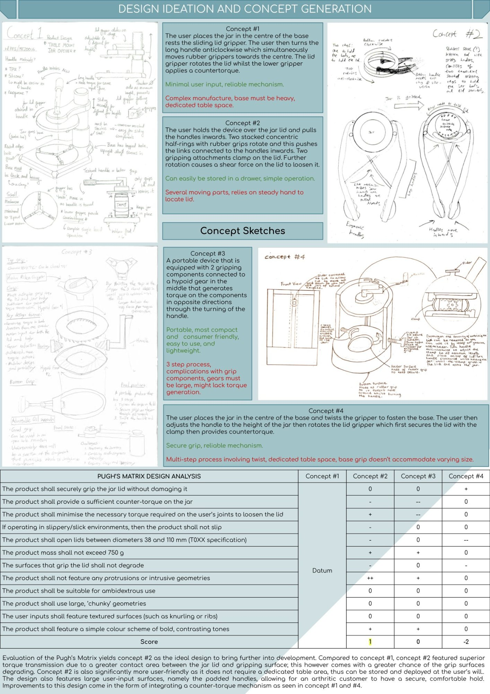
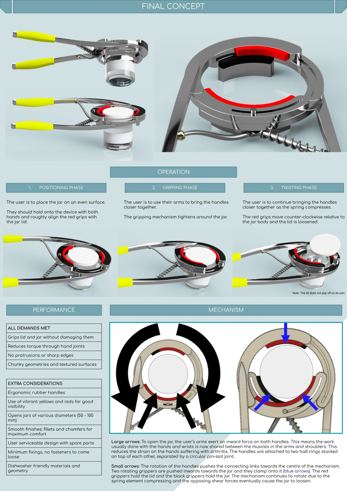
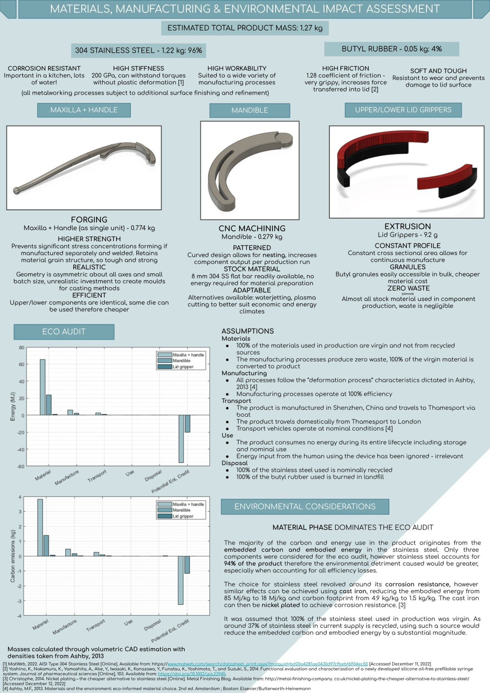

Designing for Accessibility
This project focused on designing a low part-count mechanical jar opener to minimise the torque input required for individuals with arthritis or joint pain. With a 40% lifetime risk of developing symptomatic hand osteoarthritis by age 85, the need for accessible everyday tools is significant.
The design challenge: reduce the torque demand on the user's hand joints while maintaining a reliable, safe, and manufacturable product. The project followed a full product design lifecycle — from research and specification through concept generation, analysis, CAD rendering, and materials assessment.
Understanding the User Need
The project began with comprehensive research into arthritis prevalence and its mechanical implications — specifically the 10% reduction in grip strength experienced by sufferers. A detailed product specification was formulated covering operation, geometry, materials, and ergonomics requirements.
Three existing products were analysed — an oil filter wrench, an under-cabinet jar opener, and a one-hand grip opener — to identify strengths and limitations in the current market.

Four Concepts, One Winner
Four distinct design concepts were developed and evaluated against the product specification using Pugh's Matrix design analysis. Concept #2 — a hand-held device using two concentric half-rings with rubber grippers — emerged as the optimal solution, scoring highest for torque transmission, user-friendliness, and storability.

The Final Concept
The selected design features two stacked concentric half-rings with rubber lid grippers. Squeezing the handles inward causes the gripping mechanism to clamp the lid and rotate it counter-clockwise, leveraging arm and shoulder muscles rather than hand joints — dramatically reducing strain for arthritic users.
The device opens jars from 50–100mm in diameter, features chunky ergonomic rubber handles, and is fully ambidextrous. All performance demands were met in the final concept.

Materials, Manufacturing & Environmental Impact
The final design uses 304 stainless steel (96% by mass) for its corrosion resistance, high stiffness (200 GPa), and workability. The Maxilla and Handle are forged as a single unit for grain strength, the Mandible is CNC machined, and the Lid Grippers are extruded from Butyl rubber for its high friction coefficient of 1.28.
An eco-audit identified the material phase as the dominant contributor to embodied energy and carbon — a key consideration for future iterations, with cast iron presented as a lower-impact alternative.
